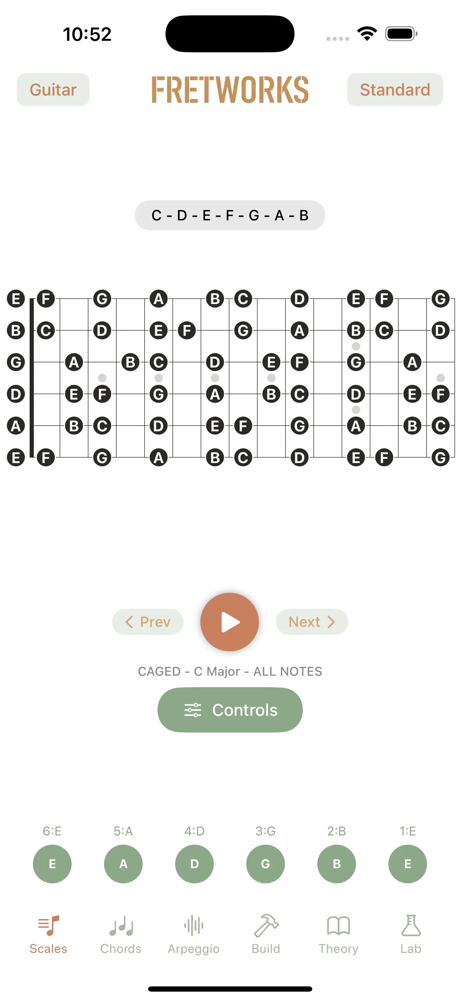
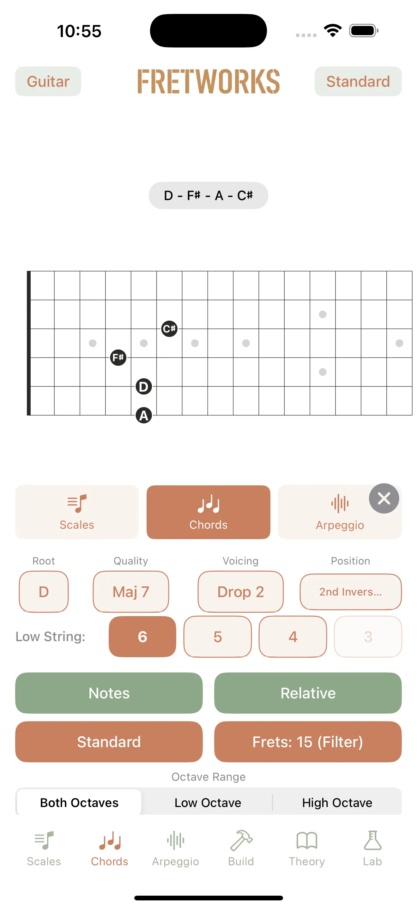
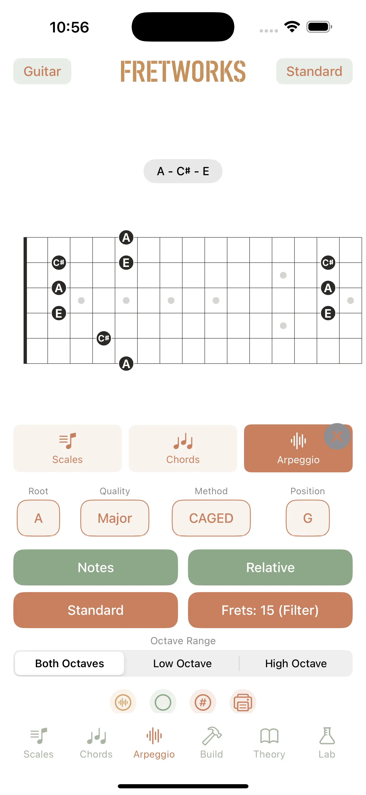
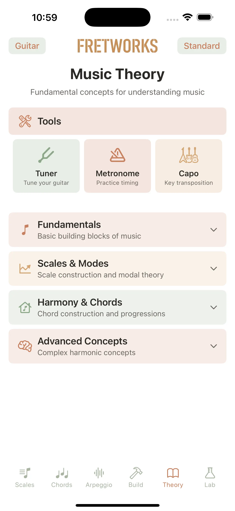
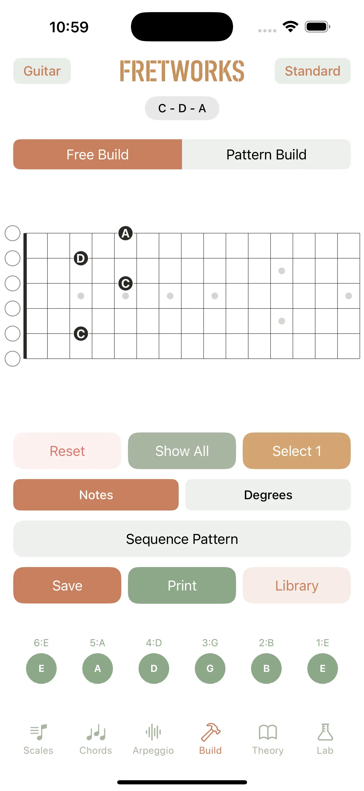
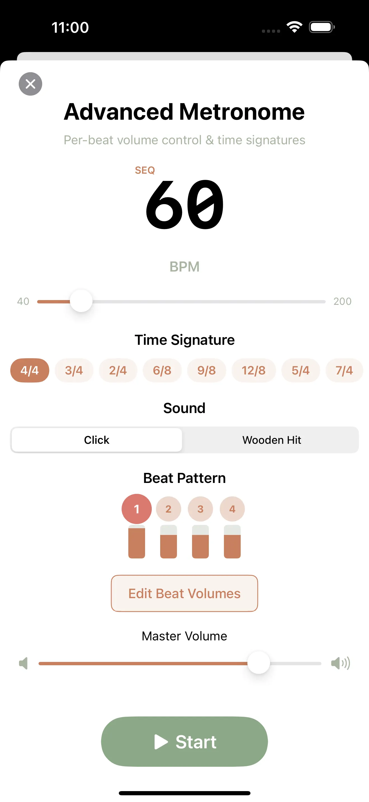

A fretboard companion for every stringed instrument you play.
Fretboard Origin is a native iPhone and iPad fretboard visualizer, chord and scale library, ear-training studio, and strobe tuner — built for 34+ stringed instruments from around the world. Whether you play guitar, bass, mandolin, sitar, oud, or charango, the fretboard adapts to your tuning, your tradition, and your practice.
Thousands of chord voicings. 43 chord qualities, every key, every supported instrument and tuning. Plus 14 scale types, 13 arpeggio types, and four teaching systems.
Get Fretboard Origin on the App Store


14 scale types in any key, mapped across the fretboard. CAGED, Berklee, Bruno, and Grimoire teaching systems — pick the lens that works for your brain.
43 chord qualities, every key, across every instrument and tuning. Context-aware enharmonic spelling, so Eb shows up as Eb, not D#.
Tap the fretboard to create custom voicings. Sequential recording, MIDI import, and degree-kernel enumeration help you discover voicings you'd never find by accident.
Chord training in four progressive stages, dyad training, and ear training with score tracking and accuracy analytics.
Real-time YIN pitch detection with harmonic analysis. Cent-level deviation display down to ~30Hz.
Indian classical drone with root, fifth, and octave voices plus detuning — for raga practice and Just Intonation work.
Fretboard Origin isn't just a guitar app. The instrument library spans five regional traditions, each with authentic tunings, fret counts, and string layouts.


Fretboard Origin includes a real-time pitch detector (YIN autocorrelation with harmonic analysis across four harmonics), strobe-style tuner display with cent deviation, a Wurlitzer-style synth for auditioning voicings, a metronome with pattern sequencing, and a Tanpura drone designed for Indian classical music pedagogy.

Built for practice that travels. Whether you're learning the modes on a guitar, transcribing a tabla recording with a Tanpura in the background, or finally tackling DADGAD — the fretboard, the tuner, and the theory follow you across instruments.
A native iPhone and iPad fretboard visualizer, chord/scale library, ear-training tool, and strobe tuner for 34+ stringed instruments from American, Asian, European, Latin, and Middle Eastern/African traditions.
34 instruments across five regions: guitar (including 7-string and baritone), bass (4/5/6-string), banjo, mandolin, dulcimer, dobro, violin, pedal steel, sitar, shamisen, pipa, koto, bouzouki, balalaika, lute, cittern, guitarrón, vihuela, cuatro, tres, requinto, charango, oud, saz, kora, ngoni, plus ukulele variants.
Chord training (four stages from triads through seventh chords), ear training (interval and chord identification), dyad training, and practice sessions with score tracking and accuracy analytics.
Eight built-in tuning presets and a custom tuning builder for any instrument.
Yes. The tuner uses YIN pitch detection with harmonic analysis tracked across four harmonics, with strobe-style display and cent-level deviation. Frequency accuracy reaches down to roughly 30Hz.
Because the app supports Indian classical instruments and the Indian classical tradition relies on a continuous tonic drone. The Tanpura includes root, fifth, and octave voices with adjustable detuning so it behaves like the real thing, not a synthesized sustain.
No. No accounts, no analytics, no advertising, no third-party SDKs. The Microphone permission (used for the tuner) processes audio only on device; nothing is recorded or transmitted.
No accounts. No analytics. No advertising. No third-party SDKs. Microphone audio (for the tuner) never leaves your device. Read the full privacy policy →
Fretboard Origin is available on the App Store for iPhone and iPad.
Get Fretboard Origin on the App Store